デプロイ#
デプロイの概要#
Backend.AI では、デプロイ（Deployments） 機能を通じて AI モデルを推論サービスとしてデプロイできます。デプロイは、モバイルアプリやウェブサービスのバックエンド、社内ツールなどのエンドユーザーアプリケーションが推論を実行するために呼び出せる、安定したエンドポイント URL の背後にモデルを公開します。

デプロイは通常のコンピュートセッションを拡張し、自動メンテナンス、レプリカのスケーリング、そしてレプリカの増減に左右されない永続的なエンドポイントアドレスを提供します。必要なスケーリングパラメータを指定するだけで、Backend.AI が内部の推論セッションを自動的に作成・監視・終了するため、セッションを手動で管理する必要はありません。
デプロイページ#
デプロイページには、現在のプロジェクト内のすべてのデプロイの一覧が表示されます。サイドバーメニューの デプロイ をクリックしてアクセスできます。
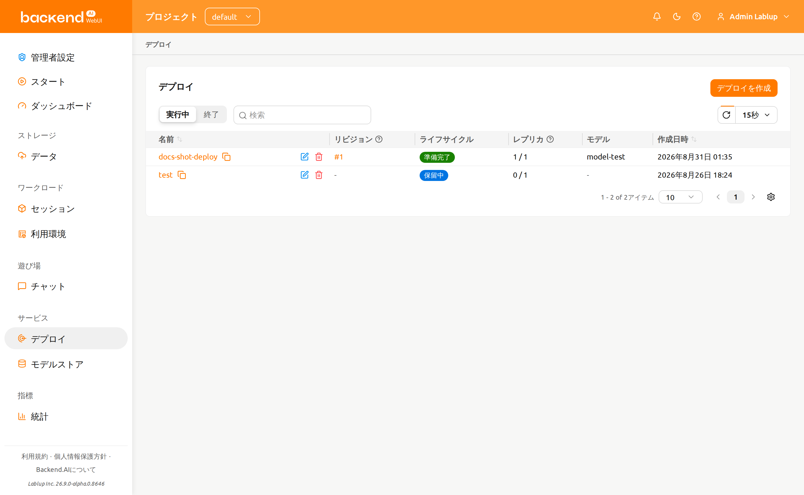
ページ上部で、ライフサイクルステージ別にデプロイをフィルタリングできます：
- 実行中: 現在実行中または作成中のデプロイを表示します。これがデフォルトビューです。
- 終了: 終了したデプロイを表示します。
デプロイを作成 ボタンをクリックしてデプロイ作成モーダルを開きます。
デプロイの作成#
デプロイを作成するフローは次の 2 ステップに分かれています。
- デプロイメントの作成 — デプロイメントのアイデンティティ情報（名前、公開範囲、デプロイメントメタデータ、リソースグループ）のみを定義する軽量なコンテナを作成します。
- Revision の追加 — 実際に実行される構成（起動コマンド、環境変数、ランタイムバリアント、イメージ、リソース、モデルストレージ）を含む設定スナップショットを追加します。
1 つのデプロイメントは複数の Revision を保持できます。任意の時点で 現在 の Revision（トラフィックを処理する Revision）は 1 つだけであり、デプロイ詳細ページの Revisions タブから他の Revision に切り替えることができます。
デプロイメント作成モーダル#
デプロイページで デプロイを作成 ボタンをクリックすると、デプロイメント作成 モーダルが開きます。このモーダルではデプロイメント単位のメタデータのみを入力し、この段階で Revision は作成されません。
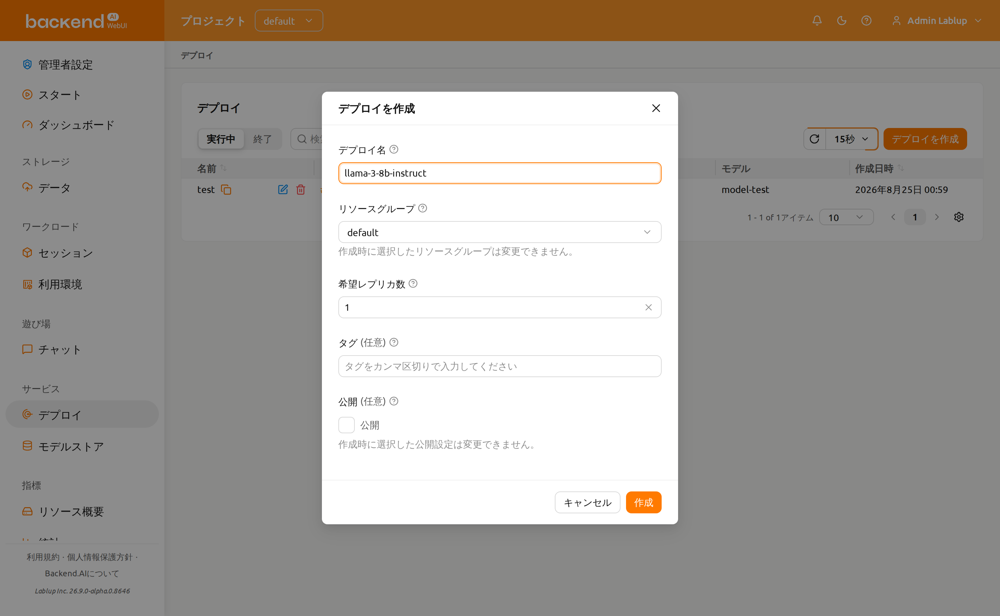
モーダルには次のフィールドが含まれます。
- デプロイ名: ダッシュボード、API、エンドポイント URL でデプロイメントを識別するための一意の名前です。
- リソースグループ: デプロイメントが実行されるリソースグループです。プロジェクトで利用可能なリソースグループが 1 つしかない場合は自動的に選択され、手動で選択しなくても先に進めます。
- 希望レプリカ数: このデプロイメントで実行し続けるレプリカ数です。システムはアクティブプールをこの目標に向けてスケーリングします。
- タグ: デプロイメントを整理・フィルタリングするための任意のラベルです。Enter またはカンマで追加します。
- 公開: 有効にすると、アクセストークンなしでエンドポイントにアクセスできます。無効にすると、すべてのリクエストにトークンが必要です。詳細は トークンの生成 を参照してください。
モーダルを開いた時点から、リソースグループ フィールドの下に 「作成時に選択したリソースグループは変更できません。」、公開 フィールドの下に 「作成時に選択した公開設定は変更できません。」 という警告が表示されます。
リソースグループは Revision ではなくデプロイメントに属する値であるため、デプロイメントを編集しても、新しい Revision を追加しても、後から別のリソースグループへ移すことはできません。公開 も同様に作成時点で確定し、デプロイを編集 モーダルではこのチェックボックスは読み取り専用となり、その下に同じ警告が表示されます。デプロイメントを作成する前に両方の値を適切に選択してください。別の値が必要な場合は、新しいデプロイメントを作成します。
作成 をクリックするとデプロイメントが作成され、デプロイ詳細ページに移動します。最初の Revision を追加するまで、デプロイされたリビジョンがありません 警告が表示されます。
作成後にデプロイレベルの設定（名前、希望レプリカ数、タグ）を変更するには、サービス情報カードの 編集 ボタンをクリックし、デプロイを編集 モーダルで値を変更して保存します。リソースグループと 公開 設定は上記のとおり作成時に固定されるため、ここでは変更できません。
Revision の追加#
Revision には、推論サーバを実行するために必要なすべての設定（イメージ、起動コマンド、リソース、モデルマウント、環境変数）が含まれます。デプロイ詳細ページで Revision を追加 ボタンをクリックしてモーダルを開きます。
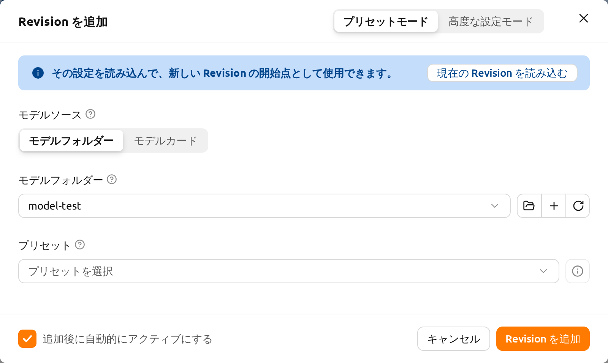
モーダルのタイトル部にある プリセットモード / 高度な設定モード の切り替えスイッチで、Revision の構成方法を選択します。
デプロイに現在の Revision がある場合、両方のモードの上部に 現在の Revision を読み込む バナーが表示されます。現在の Revision を読み込む をクリックすると、現在適用中の Revision の設定を開始点としてフォームに事前入力します（必要に応じて自動的に高度な設定モードに切り替わります）。現在の Revision がまだないデプロイではバナーは表示されず、設定を一度読み込むとバナーは消えます。
プリセットモード#
あらかじめ定義されたデプロイメントプリセットを使用して、Revision をすばやく追加します。
- モデルソース: この Revision のモデルをどこから取得するかを選択します。モデルフォルダー と モデルカード のいずれかを選ぶと、下のセレクタが選択に応じて切り替わります。ソースを切り替えると、すでに選択していたモデルとプリセットの選択はクリアされます。
- モデルフォルダー (モデルフォルダーソース): 各レプリカにマウントされるストレージフォルダーです。
- モデルカード (モデルカードソース): デプロイするモデルカードです。そのカードのモデルフォルダーが各レプリカにマウントされ、そのカードと互換性のあるプリセットのみが表示されます。セレクタ横の ⓘ ボタンをクリックすると、選択したカードの モデルカード詳細 ドロワーが開きます。
- プリセット: デプロイメントのリソースグループと互換性のあるデプロイメントプリセットです。セレクタ横の ⓘ ボタンをクリックすると、プリセットの詳細構成を確認できます。モデルカード ソースでは、カードを選択するまで 「先にモデルカードを選択してください。」 というヒントとともにセレクタが無効のままになります。
選択したモデルカードにマウントできるモデルフォルダがない場合、Revision は作成されず、「選択したモデルソースにマウントできるモデルフォルダがありません。別のモデルカードまたはモデルフォルダを選択してください。」 というエラーメッセージが表示されます。別のモデルカードを選択するか、ソースを モデルフォルダー に戻してください。
デプロイメントのリソースグループに対応するプリセットがない場合は、案内メッセージが表示されます。その場合は高度な設定モードに切り替えて手動で構成してください。
高度な設定モード#
すべての設定を直接構成します。
フォームは以下のセクションで構成されています。
- モデルとランタイム: モデルフォルダーとそのマウント先、ランタイムバリアントを選択します。
vLLM/SGLangバリアントではランタイムパラメータパネルが、Customバリアントではサービス構成セクションが表示されます。ランタイム固有のフィールドの詳細については、以下のセクションを参照してください。 - ヘルスチェック と 起動前アクション: ヘルスチェックと、推論サーバの起動前に実行するアクションを設定します。どちらもすべてのランタイムバリアントで利用できます。
- 環境: コンテナイメージ（実行環境 / バージョン）を選択し、環境変数を追加します。
- クラスターとリソース: CPU、メモリ、アクセラレータのリソースを割り当てます。
- 詳細設定 （折りたたみ可能）: モデル定義ファイルパスを指定し、モデルフォルダーに加えて追加でマウントするストレージフォルダーを設定します。
モーダル下部の 追加後に自動的にアクティブにする チェックボックスをオンにすると、Revision の作成直後に有効化されます。オフの場合は非アクティブ状態で保存され、後から Revisions タブで適用できます。
Revision 構成: フィールドリファレンス#
以下のサブセクションでは、Revision レベルのフィールドについて詳しく説明します。これらは 高度な設定モード で手動で Revision を追加する場合と、各フィールドの動作を理解したい場合の両方に適用されます。
モデルフォルダーのマウント#
Revision ごとに 1 つのモデルストレージフォルダーが各レプリカにマウントされます。フォルダーセレクタのすぐ下にあるフィールドで、そのフォルダーをコンテナ内のどこに配置するかを指定します。
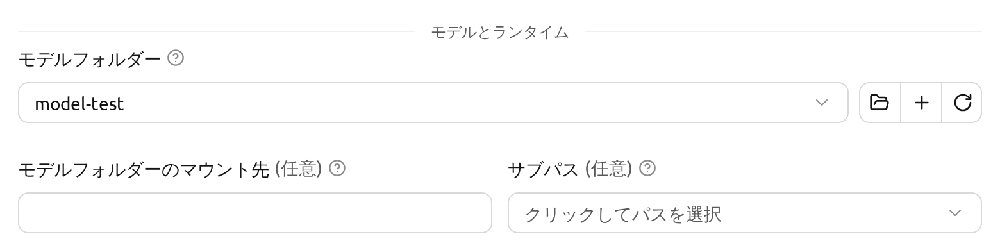
- モデルフォルダー: 各レプリカにマウントするモデルストレージフォルダーです。
- モデルフォルダーのマウント先: コンテナ内でモデルストレージフォルダーがマウントされるパスです（デフォルト:
/models）。 - サブパス: フォルダーのルートの代わりにマウントする、モデルフォルダー内のサブフォルダーです。フィールドをクリックするとディレクトリピッカーが開き、選択したモデルフォルダーのディレクトリツリーからサブフォルダーを選びます。未設定のままにするとフォルダーのルートがマウントされます。
サービス構成（Custom ランタイムのみ）#
モデルフォルダーから設定を読み込むランタイムバリアント（例: Custom）を選択すると、ランタイム セレクタの下に サービス構成 セクションが表示されます。このセクションはデフォルトで展開されており、推論サーバプロセスの起動方法を定義します。
- 実行方式: コマンドの実行方法です。
- Shell: シェル（
bash -c "..."）を介してコマンドを実行するため、シェル演算子が使用できます。ほとんどの場合に推奨されます。 - Exec: シェルを介さず、コマンドを引数として直接実行します。シェルなしでコマンドを実行する必要がある場合（例: シェルバイナリを持たないイメージ）にのみ使用してください。
- Shell: シェル（
- シェル: コマンドの実行に使用するシェルバイナリです（例:
/bin/bash）。Shell 方式でのみ表示され、必須項目です。このバイナリがコンテナイメージに存在しないと、サービスは起動に失敗します。 - コマンド: 推論サーバを起動するコマンドです（例:
python -m http.server 8000）。Shell 方式では複数行の入力ボックスになり、Exec 方式ではラベルが コマンド (argv) に変わり 1 行の入力フィールドになります。 - ポート: 推論サーバがリッスンするコンテナポートです（2〜65535）。
Shell 方式ではコマンドがシェルに渡されるため、;、|、&&、$VAR、リダイレクトなどの演算子がターミナルと同じように解釈されます。
chmod +x /setup.sh; vllm serve /modelsExec 方式では同じ行が引数に分割されて直接実行されるため、これらの演算子はそのままの文字列として扱われます。引数はスペースで区切り、スペースを含む引数は引用符で囲んでください（例: --name "my model"）。シェル構文が必要な場合は、コマンドを /bin/bash -c "..." で囲むのではなく、実行方式 を Shell に戻してください。
ヘルスチェックと起動前アクション#
ヘルスチェックを有効化 と 起動前アクション のフィールドはサービス構成セクションの下に続き、すべてのランタイムバリアントで表示されます。
- ヘルスチェックを有効化: 有効にすると、システムは推論サーバへ定期的に HTTP リクエストを送信し、正しく応答しているか確認します。無効（新規 Revision のデフォルト）の場合、ヘルスチェックは設定されず、異常なレプリカは自動的に検出されません。本番デプロイでは有効にすることを推奨します。ヘルスチェックを有効化 をオンにすると、以下のフィールドが追加で表示されます。
- パス: サービスのヘルスチェック時に呼び出される HTTP エンドポイントパスです（デフォルト:
/health）。 - 間隔: 連続するヘルスチェックの間隔（秒）です。
- 最大リトライ回数: レプリカが
UNHEALTHYとマークされるまでに許容される連続失敗回数です。 - 最大待機時間: 個々のヘルスチェックリクエストのタイムアウト（秒）です。
- ステータスコード: サービスが正常であることを示す HTTP レスポンスステータスコードです。
- 起動猶予期間: コンテナ起動後、ヘルスチェックの失敗を許容する猶予期間（秒）です。最初に成功した時点でレプリカがアクティブになります。読み込みに時間がかかる大規模モデルでは値を大きくしてください。
- パス: サービスのヘルスチェック時に呼び出される HTTP エンドポイントパスです（デフォルト:
- 起動前アクション: モデルサービスの起動前に実行するアクションです。起動前アクションを追加 をクリックして行を追加し、アクション（アクション名。例:
wait_for_file）と 引数 (JSON)（JSON オブジェクト形式の引数。例:{}）を入力します。各行で両方のフィールドが必須で、引数は有効な JSON である必要があります。サポートされるアクションの一覧については、Backend.AI モデルサービングでサポートされるサービスアクションの説明 を参照してください。
モデル定義ファイルのパス自体は、フォーム下部の 詳細設定 パネルにあります。このファイルの作成手順については、モデル定義ファイルの作成 セクションを参照してください。
ランタイムパラメータ（vLLM / SGLang）#
vLLM または SGLang ランタイムバリアントを選択すると、サービス構成セクションの代わりに ランタイムパラメータ セクションが表示されます。このセクションでは、設定ファイルを手動で編集することなくサービングフレームワークを構成できます。
パラメータはタブで区切られたカテゴリ別に構成されています。使用可能なタブの一覧はランタイムバリアントによって異なります。
変更されていないパラメータはランタイムのデフォルト値を使用します。
管理者は個々のパラメータを必須としてマークできます。必須パラメータはラベルの横に赤いアスタリスク（★）で示されます。必須パラメータが空のままフォームを送信しようとするとブロックされ、未訪問のタブにあるフィールドでもインラインバリデーションエラーが表示されます。
ヘルスチェックを有効化
ヘルスチェックを有効化 と 起動前アクション のフィールドはランタイムパラメータセクションの下にあり、ヘルスチェックと起動前アクション で説明したとおりに動作します。Custom バリアントと同様に、vLLM や SGLang でも表示されます。
vLLM ランタイムパラメータ
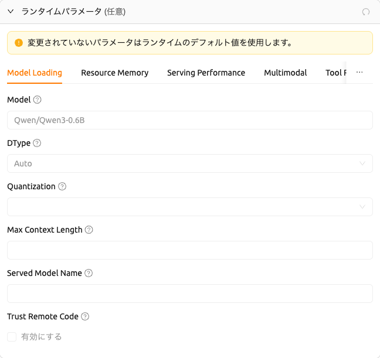
vLLM は次のパラメータタブを提供します: Model Loading、Resource Memory、Serving Performance、Multimodal、Tool Reasoning など。
Model Loading タブの主要フィールド:
- Model: 使用するモデルの名前またはパスです。
- DType: モデルの重みと計算のデータ型です（例:
Auto、float16、bfloat16）。 - Quantization: モデルの量子化方式です（例:
awq、gptq、fp8）。 - Max Model Length: モデルが処理できる最大コンテキスト長（トークン数）です。
- Served Model Name: API エンドポイントで公開するモデル名です。
- Trust Remote Code: モデルリポジトリのカスタムモデルコードの実行を許可します。
SGLang ランタイムパラメータ
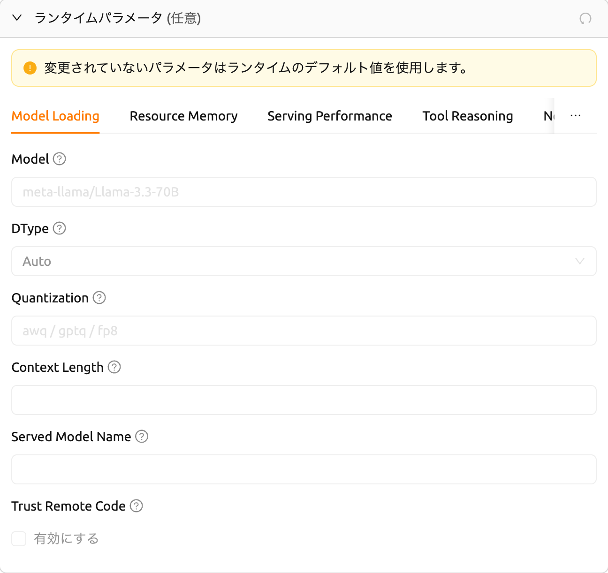
SGLang は次のパラメータタブを提供します: Model Loading、Resource Memory、Serving Performance、Tool Reasoning など。
Model Loading タブの主要フィールド:
- Model: 使用するモデルの名前またはパスです。
- DType: モデルの重みと計算のデータ型です（例:
Auto、float16、bfloat16）。 - Quantization: モデルの量子化方式です（例:
awq、gptq、fp8）。 - Context Length: モデルが処理できる最大コンテキスト長です。
- Served Model Name: API エンドポイントで公開するモデル名です。
- Trust Remote Code: モデルリポジトリのカスタムモデルコードの実行を許可します。
vLLM および SGLang ランタイムバリアントは、環境 セクションに次の環境変数を事前入力します。
- vLLM:
BACKEND_MODEL_NAME、VLLM_QUANTIZATION、VLLM_TP_SIZE（テンソル並列化）、VLLM_PP_SIZE（パイプライン並列化）、VLLM_EXTRA_ARGS（追加 CLI 引数） - SGLang:
BACKEND_MODEL_NAME、SGLANG_QUANTIZATION、SGLANG_TP_SIZE（テンソル並列化）、SGLANG_PP_SIZE（パイプライン並列化）、SGLANG_EXTRA_ARGS（追加 CLI 引数）
環境#
環境 セクションはすべてのランタイムバリアントで利用できます。
- 実行環境 / バージョン: 推論サーバに使用するコンテナイメージです。ランタイムバリアントを選択すると、そのランタイムと互換性のあるイメージにリストが絞り込まれます。
- 画像名（手動）: イメージ参照を直接入力するフィールドで、サーバ側でイメージ名の手動入力が許可されている場合にのみ表示されます。ここに入力すると 実行環境 / バージョン の選択が解除され、逆にリストからイメージを選ぶとこのフィールドは空になります。2 つは同じイメージを指定するための代替手段です。
- 環境変数: 推論サーバコンテナに渡されるキー/値のペアです。
vLLMおよびSGLangの場合は、上記に示したランタイム専用の変数が事前入力されています。エントリは自由に追加、編集、削除できます。変数名を入力すると、HF_TOKEN、WANDB_API_KEY、AWS_ACCESS_KEY_ID、AWS_SECRET_ACCESS_KEY、AWS_DEFAULT_REGION、HTTP_PROXY、HTTPS_PROXY、NO_PROXYといったよく使われる環境変数名が、選択中のランタイムバリアントの変数とともに候補として表示されます。他の行ですでに使用されている名前は候補から除外されます。既知の名前を設定すると、値の入力欄にその変数に応じたヒントが表示されます（例:HF_TOKENでは 「あなたのHugging Faceアクセストークン」）。
イメージ名を手動で入力する場合#
リストから選ぶ代わりに 画像名（手動） に入力した場合、フォームを送信した時点で入力したイメージ参照がサーバに登録済みのイメージと照合され、一致したイメージから Revision が作成されます。
- レジストリで使われるものと同じ形式で入力します。例:
cr.backend.ai/stable/python:3.10-ubuntu20.04 @に続けてアーキテクチャを付けると、特定のアーキテクチャを指定できます。例:cr.backend.ai/stable/python:3.10-ubuntu20.04@aarch64省略した場合はマネージャーの既定アーキテクチャが使用されます。
入力した内容に一致する登録済みイメージがない場合、Revision は作成されず、該当フィールドに 「手動で入力したイメージが見つかりませんでした。登録済みのイメージ参照を入力するか、リストから選択してください。」 というエラーが表示され、そのフィールドまでスクロールします。参照を修正するか、フィールドを空にして 実行環境 / バージョン からイメージを選択してください。
イメージの照合は送信時に行われるため、エラーは入力中ではなく送信ボタンをクリックした後に表示されます。
クラスターとリソース#
クラスターとリソース セクションでは、各レプリカに割り当てるコンピュートリソースを指定します。
- リソースプリセット: CPU、メモリ、アクセラレータの割り当てがあらかじめ設定されたバンドルです。利用可能なプリセットはデプロイメントのリソースグループに応じてフィルタリングされます。プリセットを選択せずに手動でリソース（CPU、メモリ、GPU）を設定することもできます。
詳細設定#
詳細設定 折りたたみパネルを展開すると、モデル定義ファイルを指定し、モデルストレージフォルダーに加えて追加のストレージフォルダーをマウントできます。
- モデル定義ファイルパス: モデルストレージフォルダー内のモデル定義ファイルへのパスです（デフォルト:
model-definition.yaml）。Customのように、モデルフォルダーから設定を読み込むランタイムバリアントでのみ表示されます。 - 追加マウント: 推論サーバコンテナにマウントするストレージフォルダーの一覧です。準備完了（
ready）状態の汎用（非モデル）フォルダーのみ選択できます。名前が.で始まる隠しフォルダーおよびモデルストレージフォルダー自体は除外されます。
Custom ランタイム構成ファイル#
モデル定義ファイルの作成#
モデル定義ファイル名を設定できます。モデル定義ファイルパスで
他の入力フィールドを入力しない場合、システムはmodel-definition.ymlまたは
model-definition.yamlと見なします。
モデル定義ファイルには、推論セッションを自動的に開始、初期化、およびスケーリングするためにBackend.AIシステムで必要な構成情報が含まれています。これは推論サービスエンジンを含むコンテナイメージとは独立して、モデルタイプフォルダーに保存されます。これにより、特定の要件に基づいて異なるモデルをエンジンが提供できるようになり、モデルが変更されるたびに新しいコンテナイメージを構築してデプロイする必要がなくなります。ネットワークストレージからモデル定義とモデルデータをロードすることで、自動スケーリング中にデプロイメントプロセスを簡素化し、最適化できます。
モデル定義ファイルは次の形式に従います：
models:
- name: "simple-http-server"
model_path: "/models"
service:
start_command:
- python
- -m
- http.server
- --directory
- /home/work
- "8000"
port: 8000
health_check:
path: /
interval: 10.0
max_retries: 10
max_wait_time: 15.0
expected_status_code: 200
initial_delay: 60.0モデル定義ファイルのキーと値の説明
「(必須)」表示のないフィールドはオプションです。
name(必須): モデルの名前を定義します。model_path(必須): モデルが定義されているパスを指定します。service: サービスされるファイルに関する情報を整理する項目です （コマンドスクリプトおよびコードを含む）。pre_start_actions:start_commandの前に実行されるアクションです。これらのアクションは、 設定ファイルの作成、ディレクトリのセットアップ、初期化スクリプトの実行などによって環境を準備します。 アクションは定義された順序で順次実行されます。action: 実行するアクションのタイプ。利用可能なアクションタイプとそのパラメータについては 事前開始アクションを参照してください。args: アクション固有のパラメータ。各アクションタイプには異なる必須引数があります。
start_command(必須): モデルサービングで実行されるコマンドを指定します。 文字列または文字列のリストで指定できます。port(必須): モデルサービス用のコンテナポートです（例：8000、8080）。health_check: モデルサービスの定期的なヘルスモニタリングの設定です。 設定すると、システムはサービスが正しく応答しているか自動的に確認し、 異常なインスタンスをトラフィックルーティングから除外します。path(必須): ヘルスチェックリクエスト用のHTTPエンドポイントパスです（例：/health、/v1/health）。interval(デフォルト:10.0): 連続するヘルスチェック間の秒数です。max_retries(デフォルト:10): サービスをUNHEALTHYとしてマークする前に 許容される連続失敗回数です。このしきい値を超えるまでサービスはトラフィックを受け続けます。max_wait_time(デフォルト:15.0): 各ヘルスチェックHTTPリクエストのタイムアウト秒数です。 この時間内に応答がない場合、チェックは失敗とみなされます。expected_status_code(デフォルト:200): 正常な応答を示すHTTPステータスコードです。 一般的な値：200（OK）、204（No Content）。initial_delay(デフォルト:60.0): コンテナ作成後にヘルスチェックを開始するまでの 待機時間（秒）です。モデルのロード、GPUの初期化、サービスのウォームアップに時間を確保します。 大規模モデルの場合はより高い値を設定してください（例：70B+のLLMの場合300.0）。
ヘルスチェック動作の理解
ヘルスチェックシステムは、個々のモデルサービスコンテナを監視し、ヘルスステータスに基づいてトラフィックルーティングを自動的に管理します。
① AppProxy: トラフィックルーティング制御
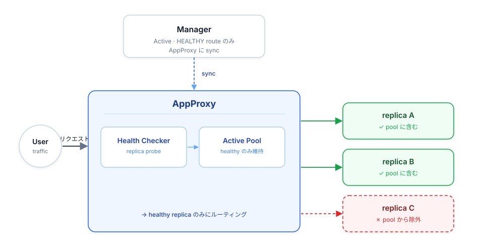
② Manager: ヘルス状態管理と eviction
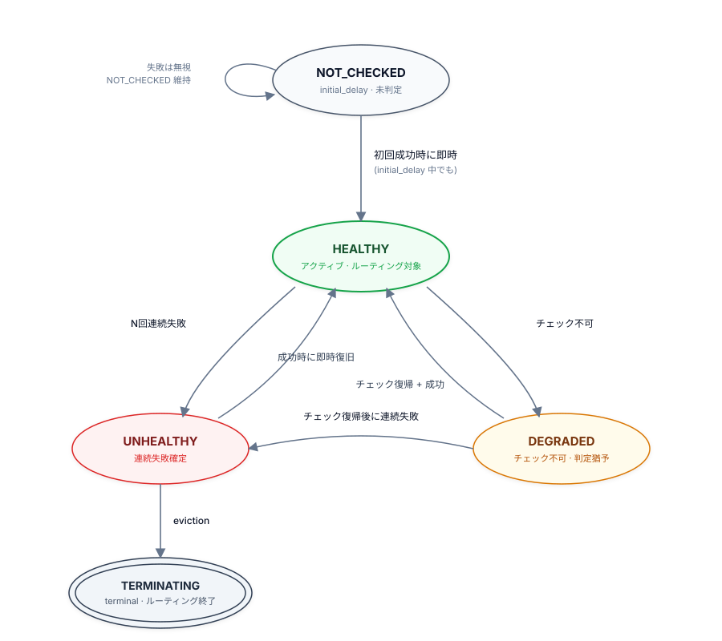
内部ヘルスステータス（トラフィックルーティングに使用）は、ユーザーインターフェースに 表示されるステータスと即座に同期されない場合があります。
UNHEALTHYまでの時間:
初期起動時:
initial_delay + interval × (max_retries + 1)デフォルト値の例: 60 + 10 × 11 = 170秒（約3分）
運用中（正常状態後）:
interval × (max_retries + 1)デフォルト値の例: 10 × 11 = 110秒（約2分）
Backend.AIモデルサービングでサポートされているサービスアクションの説明
write_file: 指定されたファイル名でファイルを作成し、内容を追加するアクションです。 デフォルトのアクセス権限は644です。arg/filename: ファイル名を指定body: ファイルに追加する内容を指定mode: ファイルのアクセス権限を指定append: ファイルへの内容の上書きまたは追加をTrueまたはFalseで設定
write_tempfile: 一時ファイル名（.py）でファイルを作成し、内容を追加するアクションです。 モードの値が指定されていない場合、デフォルトのアクセス権限は644です。body: ファイルに追加する内容を指定mode: ファイルのアクセス権限を指定
run_command: コマンドを実行した結果が、エラーも含めて以下の形式で返されます （out: コマンド実行の出力、err: コマンド実行中にエラーが発生した場合のエラーメッセージ）args/command: 実行するコマンドを配列として指定（例：python3 -m http.server 8080コマンドは ["python3", "-m", "http.server", "8080"] になります）
mkdir: 入力パスによってディレクトリを作成するアクションですargs/path: ディレクトリを作成するパスを指定
log: 入力メッセージによってログを出力するアクションですargs/message: ログに表示するメッセージを指定debug: デバッグモードの場合はTrue、それ以外はFalseに設定
モデル定義ファイルをモデルタイプフォルダーにアップロード#
モデル定義ファイル（model-definition.yml）をモデルタイプフォルダーにアップロードするには、
バーチャルフォルダーを作成する必要があります。バーチャルフォルダーを作成する際は、
デフォルトの general タイプではなく model タイプを選択してください。
フォルダーの作成方法については、データページのストレージフォルダーの作成セクションを参照してください。
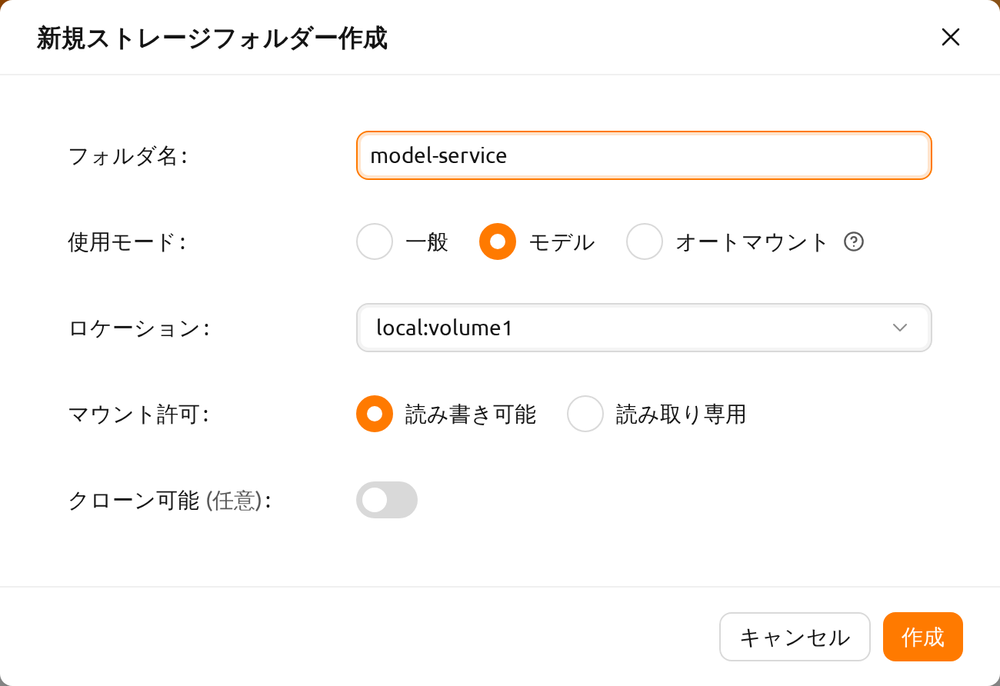
フォルダーを作成した後、データページの「MODELS」タブを選択し、 最近作成したモデルタイプフォルダーアイコンをクリックしてフォルダーエクスプローラーを開き、 モデル定義ファイルをアップロードします。 フォルダーエクスプローラーの使用方法については、フォルダーの探索セクションを参照してください。
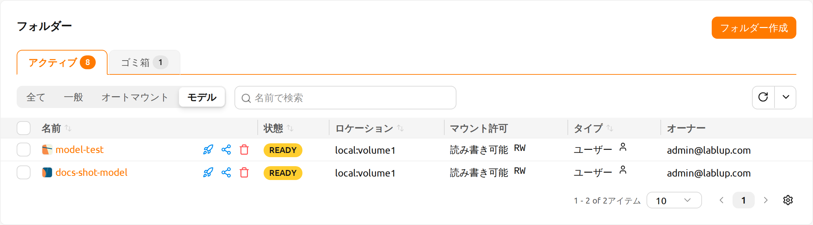
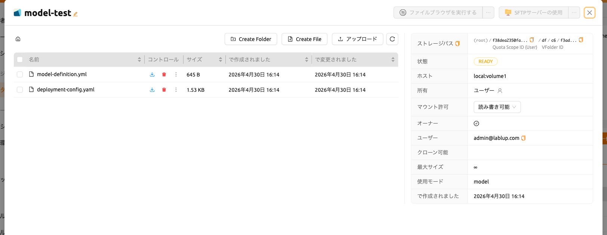
デプロイメントの事前設定 (deployment-config.yaml)#
モデルフォルダーに deployment-config.yaml ファイルを配置することで、そのモデルからデプロイメントを作成する際に使用されるリソース、環境、およびランタイム設定を事前に設定できます。ファイルが存在する場合、その値は デフォルト として使用されます。デプロイメント時に設定したもの（リビジョン追加フォームまたは API リクエスト）は、これらの値をオーバーライドします。
同じフォルダーにある service-definition.toml（TOML 形式）もフォールバックとして読み取られますが、非推奨 です。モデルフォルダーには deployment-config.yaml を使用してください。
deployment-config.yaml は オプション であり、デプロイメントに必須ではありません。ファイルの有無にかかわらず、モデルをデプロイできます。不足しているまたは不正な形式のファイルは単にスキップされます。オプションの model-definition.yaml（モデルと推論サーバーを説明）と共に、管理者がモデルと共に適切なデフォルト値を配布できます。
値は 3 段階のオーバーライド階層 を通じて解決され、最も低い優先度から最も高い優先度の順です。
- ルートレベルのデフォルト — すべてのランタイムバリアントに適用されます。
- ランタイムバリアントセクション（例:
vllm、sglang、tgi）— そのバリアントのみの個別フィールドをオーバーライドします。 - デプロイメント時の入力（リビジョン追加フォーム / API リクエスト）— すべてをオーバーライドします。
environment:
image: "example.com/model-server:latest"
architecture: "x86_64"
resource_slots:
cpu: 4
mem: "16gb"
"cuda.shares": "0.5"
environ:
MODEL_NAME: "example-model-name"
resource_opts:
shmem: "8g"
vllm:
environment:
image: "vllm-optimized:0.4.0"
resource_slots:
cpu: 8
"cuda.device": 2フィールドリファレンス
environment: 推論サービス用のコンテナーイメージとアーキテクチャーです。image: コンテナーイメージの完全なパスです（例:example.com/model-server:latest）。architecture: イメージの CPU アーキテクチャーです（例:x86_64、aarch64）。
resource_slots: 各レプリカに割り当てられるコンピュートリソースです。cpu: CPU コア数です（例:4、8）。mem: 単位サフィックス付きのメモリー量です（例:"16gb"）。"cuda.shares"/"cuda.device": 分数または整数の GPU 割り当てです。ドットを含むキーはクォートしてください。
environ: 推論サービスコンテナーに渡される環境変数です。ルート値とバリアント値はマージされます。resource_opts:shmem（共有メモリーサイズ）などの追加リソースオプションです。
vLLM デプロイメントの場合、ルートのデフォルト値は vllm セクションとマージされ（バリアントフィールドが優先）、デプロイメント時の入力はその両方をオーバーライドします。バリアントセクションにリストされたフィールドのみがオーバーライドされ、それ以外はすべてルートレベルにフォールバックします。
クイックデプロイ#
プリセットベースのクイックデプロイを使用すると、別途の設定ファイルなしでデプロイを作成できます。次の 2 つの入口からクイックデプロイを開始できます。
- モデルストアで事前構成されたモデルカードを閲覧し、
デプロイボタンをクリックすると、プリセットベースですぐにデプロイできます。 - データページの モデル タブでモデルフォルダーの
サービスとしてデプロイボタンをクリックすると、プリセットで新規デプロイメント作成 モーダルが開きます。プリセットとリソースグループを選択すると、別途の設定なしですぐにデプロイされます。
モデルデプロイの全体的な流れについては、モデルストア セクションを参照してください。
デプロイ詳細ページ#
デプロイ一覧でデプロイ名をクリックすると、デプロイメントの詳細情報を表示できます。
デプロイメントアラート#
デプロイ詳細ページでは、デプロイメントの現在の状態に応じて、ページ上部にコンテキスト対応のアラートバナーが表示されます。
デプロイの準備が完了しました: デプロイメントのステータスが
HEALTHYの場合に表示されます。ページを離れずにモデルをテストできるよう、LLM チャットテストインターフェースへのショートカットとして チャットでテスト ボタンが含まれます。非公開デプロイメントです。エンドポイントの使用にはアクセストークンが必要です。: 公開 が無効で、エンドポイント URL が発行済みで、かつアクセストークンがまだ 1 つもない場合に表示されます。バナーから直接アクセストークン作成ダイアログを開く アクセストークンを追加 ボタンが含まれ、最初のトークンを作成するとバナーは消えます。詳細は トークンの生成 を参照してください。
デプロイされたリビジョンがありません。リビジョンを追加してこのサービスを有効化してください。: デプロイメントに現在の Revision が存在しない場合に表示されます。
Revision を追加をクリックして最初の Revision を作成し、サービスを有効化します。サービスを準備しています: デプロイメントが作成中、またはステータスが遷移中の場合に表示されます。サービスがまだリクエストを処理する準備ができていないことを示します。
このモデルサービスは別のプロジェクトに属しています: デプロイが現在選択されているプロジェクトとは異なるプロジェクトに属している場合に表示されます。このアラートが表示されている間は Edit ボタンが無効になります。アラート内の プロジェクトを切り替える ボタンをクリックして正しいプロジェクトに切り替えてください。
基本情報#
基本情報 カードにはデプロイメントのメタデータが表示されます。
- ライフサイクル: デプロイメントのステータスタグです。ステータスタグの横に スケジュール履歴 リンクボタンが表示され、クリックするとこのデプロイメントのスケジューリングイベント履歴をモーダルで確認できます。
- デプロイ名とステータス
- デプロイIDとセッションオーナー
- 公開範囲: 公開 / 非公開 タグとして表示されます。公開 はアクセストークンなしでエンドポイントにアクセスできることを意味し、非公開 は呼び出し元が有効なアクセストークンを送信する必要があることを意味します。
- レプリカ数
- サービスエンドポイント: デプロイメントにアクセスするための URL です。LLM デプロイメントの場合、
チャットでテストボタンが利用可能です。 - リソースグループ: デプロイメントが実行されるリソースグループです。リソースグループは Revision 単位ではなく、デプロイメントのメタデータの一部として（デプロイメント作成時に一度だけ設定）管理されます。
- リソース: 割り当てられた CPU、メモリ、アクセラレータ、および 共有メモリ (SHM) です。共有メモリの値は現在の Revision を基準に表示され、推論サーバが利用できる
/dev/shmのサイズを表します。マルチ GPU やマルチプロセス推論のワークロードで重要です。 - モデルストレージ: マウントされたモデルストレージフォルダーとマウント先です。
- 追加マウント: マウントされた追加のストレージフォルダーです。
- 環境変数: コードブロックとして表示されます。
- イメージ: サービスに使用されるコンテナイメージです。
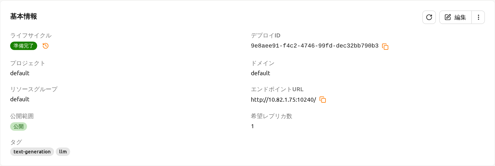
その他メニュー（編集と削除）#
サービス情報カードのヘッダーには、編集 ボタンに加えて その他 メニューが表示されます。編集 ボタンをクリックすると、デプロイメント作成モーダル で説明した デプロイを編集 モーダルが開きます。その他メニューには現在 デプロイを削除 アクションが含まれます。
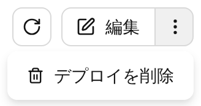
スケジュール履歴#
ステータスタグの横にある スケジュール履歴 リンクボタンをクリックすると、デプロイメントのスケジュール履歴 モーダルが開きます。このデプロイメントに記録されたスケジューリングイベントが新しい順に表示され、プロパティフィルターバー（ID、フェーズ、結果、変更前ステータス、変更後ステータス、エラーコード、メッセージ、作成日時、更新日時）と更新ボタンが用意されています。
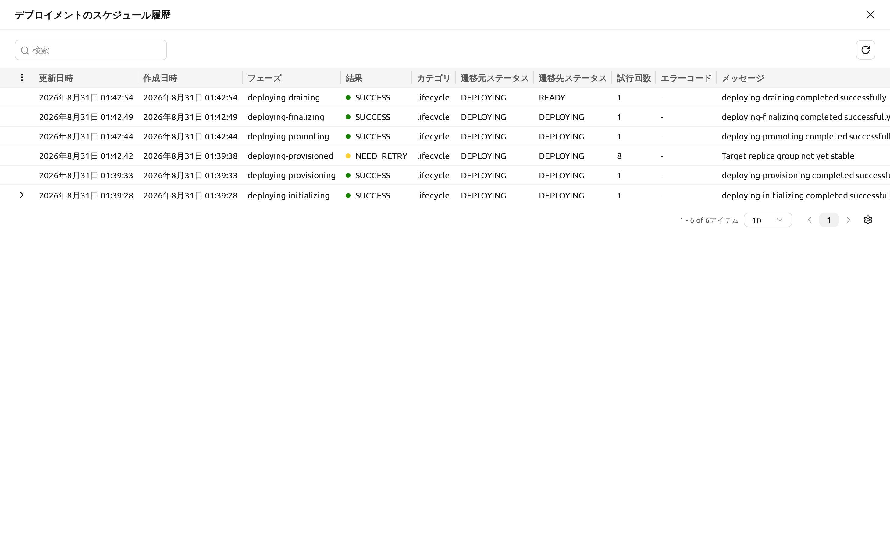
サブステップが記録されているイベントには、行の左側に展開用の矢印が表示されます。クリックすると、そのフェーズのサブステップを 1 行ずつ並べたコンパクトなインラインテーブルが開きます。テーブルの列は次のとおりです。
- ステップ: サブステップの名前です。
- 結果: サブステップの結果で、色分けされたマーカーとして表示されます。
- 所要時間: サブステップにかかった時間です（例:
120 ms、1.35 s）。 - 時刻: サブステップが開始した時刻で、ミリ秒まで表示されます。
- エラーコード: サブステップに記録されたエラーコードです。ない場合は
-と表示されます。 - メッセージ: サブステップの詳細やエラー文で、1 行に折りたたまれて表示されます。
レプリカタブから開く レプリカのスケジュール履歴 モーダルも、同じ表を使用します。レプリカ を参照してください。
Revisions タブ#
デプロイ詳細ページの Revisions カードには、現在の Revision、Revision 履歴、監査ログ の 3 つのタブがあります。カード上部の Revision を追加 ボタンはすべてのタブから使用でき、Revision 追加モーダルを開きます（Revision の追加 を参照）。
現在の Revision タブ#
現在の Revision タブは、現在アクティブでトラフィックを処理している Revision の完全な設定を表示します。
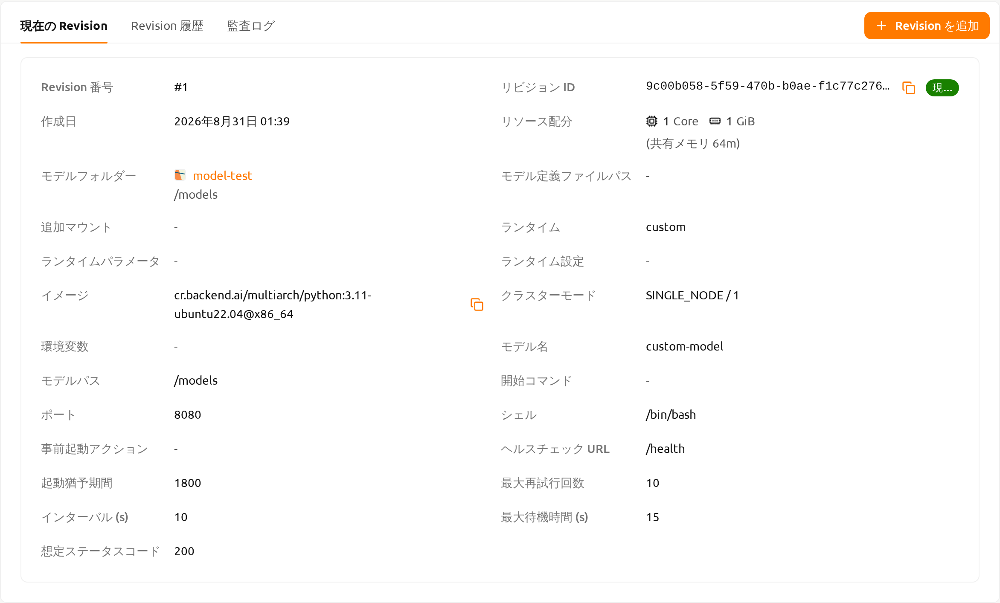
次のフィールドが表示されます。
- Revision 番号: 自動割り当てされた連番です（例: #3）。
- Revision ID: この Revision の UUID です。
- 作成日時
- リソース割り当て: 各レプリカのリソース割り当て（CPU、メモリ、アクセラレータ）です。
- モデルフォルダー: 各レプリカにマウントされたモデルフォルダーで、リンクと モデルフォルダーのマウント先 とともに表示されます。サブフォルダーをマウントしている Revision では、
サブパス: <値>の行も表示されます。 - モデル定義ファイルパス: モデルフォルダー内のモデル定義ファイルのパスです。
- 追加マウント: 各レプリカにマウントされた追加のストレージフォルダーです。
- ランタイム: サービングランタイムです（例:
vLLM、SGLang、Custom）。 - ランタイムパラメータ: この Revision に設定されたランタイムバリアントのプリセットパラメータ値です（例: DType: float32、Quantization: awq）。プリセットパラメータ値が設定されている
vLLMまたはSGLangの Revision にのみ表示されます。Customランタイムまたはプリセット値のない Revision の場合はダッシュが表示されます。 - ランタイム設定:
vLLMまたはSGLangランタイムで追加設定が存在する場合に JSON 形式で表示されます。 - イメージ: レプリカの実行に使用されるコンテナイメージです。
- クラスターモード: 各レプリカのコンピューティングセッションのクラスタリングレイアウト（モード / サイズ）です。
- 環境変数: コンテナに注入されるキーと値のペアで、シェルスクリプトブロックとして表示されます。
モデル定義ファイルにモデルが定義されている場合、以下のフィールドも表示されます。
- モデル名、モデルパス、開始コマンド、ポート、シェル、事前起動アクション、ヘルスチェック URL、起動猶予期間、最大再試行回数、インターバル (s)、最大待機時間 (s)、想定ステータスコード
デプロイ進行中の状態
別の Revision がデプロイ中の間、現在の Revision タブには "Revision N をデプロイしています。" というアラートが表示されます。アラートの Revision を表示 ボタンをクリックすると、デプロイ中の Revision の詳細ドロワーが開きます。タブはデプロイが完了するまで5秒ごとに自動更新されます。
空の状態
まだ Revision がデプロイされていない場合、タブには "デプロイされたリビジョンがありません。リビジョンを追加してこのサービスを有効化してください。" と表示されます。
Revision 履歴タブ#
Revision 履歴 タブは、デプロイメントに追加されたすべての Revision を新しい順に表示します。
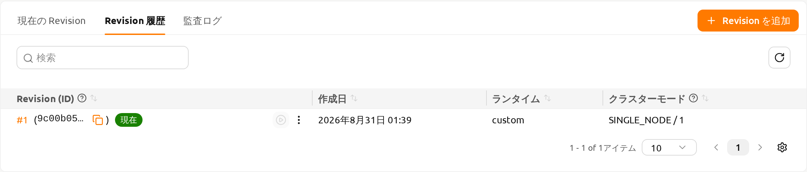
テーブルには次のカラムが含まれます。
- Revision (ID): Revision 番号とその UUID です。Revision 番号は増加する整数で、数値が小さいほど古い Revision です。Revision 番号をクリックすると Revision 詳細ドロワーが開きます。
- 作成日時
- ランタイム: この Revision で使用されるサービングランタイムです（例:
vLLM、SGLang、Custom）。 - クラスターモード: 「モード / サイズ」形式のクラスタリングレイアウトです。カラムヘッダーをホバーすると説明が表示されます。
デフォルトでは非表示ですが、カラム設定から有効にできるカラム：
- モデルバージョン、イメージ、モデルフォルダー
Revision のデプロイとその他の操作
各行には デプロイ ボタンとその他メニューがあります。
デプロイ: クリックすると確認ダイアログが開きます。確認後、選択した Revision が現在の Revision となり、デプロイメントは新しい設定でトラフィックの処理を開始します。以前の Revision は履歴に保持されます。
この Revision を基に Revision を作成: その他メニューから選択できます。該当する Revision の設定が事前入力された状態で Revision 追加モーダルが開き、すばやく修正・再デプロイできます。
緑色の 現在 タグは、現在アクティブな Revision を示します。
黄色の デプロイ中 タグ（ローディングスピナー付き）は、デプロイ中の Revision を示します。
デプロイ ボタンは、現在アクティブな Revision およびデプロイ中の Revision に対して無効化されます。デプロイメントが停止している間や、適用またはロールバックがすでに進行中の間も使用できません。
行の Revision 番号をクリックすると、その Revision の完全な設定を示す詳細ドロワーが開きます。ドロワーにも デプロイ ボタンと この Revision を基に Revision を作成 ボタンがあり、表と同じ条件で デプロイ ボタンが無効化されます。
ランタイムパラメータ フィールドは、vLLM および SGLang の Revision に対して Revision 詳細ドロワーにも表示され、現在の Revision タブと同じプリセットパラメータ値が確認できます。
監査ログタブ#
監査ログ タブは、このデプロイメントに対して行われたすべての操作の時系列記録を表示します。誰がいつデプロイメントを変更したかを追跡するために使用します。
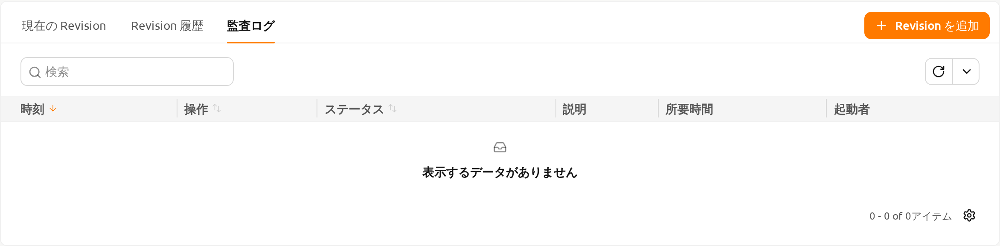
レプリカ#
レプリカタブには、デプロイメントを構成するルーティングノードが表示されます。タブ上部の 実行中 / 終了 ラジオコントロールで項目をフィルタリングします。
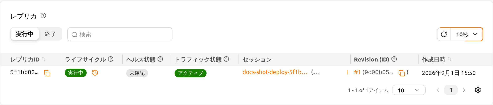
- 実行中: 現在プロビジョニング中、実行中、またはアクティブなレプリカを表示します。
- 終了: ライフサイクルが終了したレプリカを表示します。
各レプリカ行には、互いに独立した 3 つのステータスフィールドが表示されます。これらは異なる軸を表すため、組み合わせて読む必要があります。たとえば、レプリカのライフサイクルが実行中でも、ヘルスステータスはまだ未確認の場合があります。
- ライフサイクルステータス: レプリカがライフサイクルのどの段階にあるかを示します（例: プロビジョニング中、ウォームアップ中、実行中、終了中、終了）。ウォームアップ中の間、レプリカは起動猶予期間内にあります。つまり起動中で、最初のヘルスチェック成功を待機しています。この期間中はヘルスチェックの失敗が許容され、最初に成功すると実行中に移行し、期間が終わるまで一度も成功しなかった場合は終了します。列見出しにはライフサイクルと表示されます。
- ヘルスステータス: レプリカプロセスの現在の健全性です（正常、異常、低下、未確認）。
- 未確認は、最初のヘルスチェックがまだ完了していないことを意味します。レプリカは通常、ウォームアップ中の猶予期間内にあります。それ自体はエラーではありません。レプリカの現在の段階はライフサイクルステータスで確認します。
- トラフィックステータス: レプリカが現在リクエストを処理しているかどうかです。レプリカは健全性とは無関係にトラフィックから除外されることがある（例: 手動で無効化した場合）ため、トラフィックはヘルスステータスにまとめずに独立したステータスとして表示されます。
3 つのステータスは互いに独立した軸です。ウォームアップ中のライフサイクル段階では、レプリカは起動猶予期間内にあり、最初のチェックが完了するまでヘルスステータスは通常未確認と表示されます。これはそれ自体が問題を示すものではありません。
セッション 列のセッション名をクリックするとセッション詳細ドロワーが開き、リビジョン(ID) 列のリビジョン番号をクリックするとリビジョン詳細ドロワーが開きます。
ライフサイクル 列のステータスタグの横には履歴アイコンボタンがあります。クリックすると該当レプリカの レプリカのスケジュール履歴 モーダルが開き、レプリカのスケジューリングイベント履歴を日付範囲やステータスなどで絞り込んで確認できます。
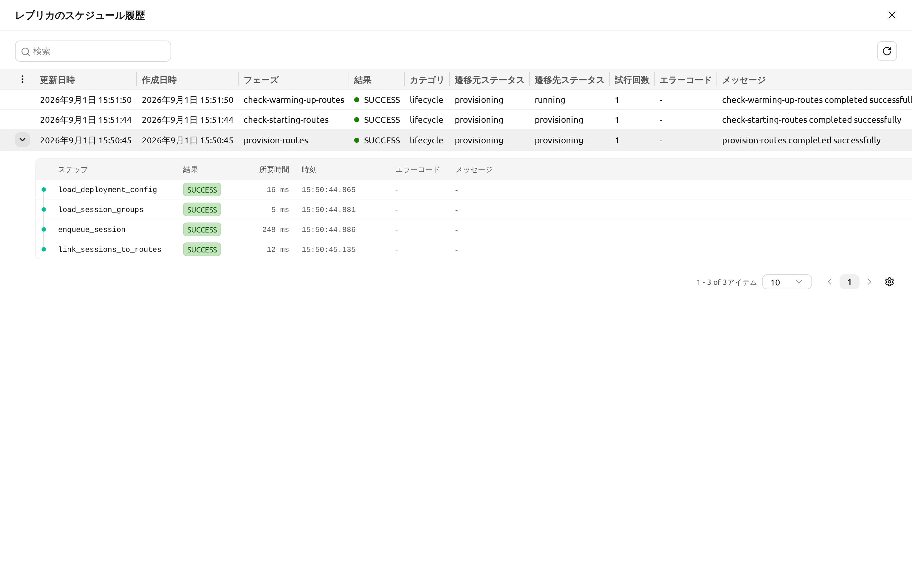
レプリカでエラーが発生した場合、行のエラーインジケータをクリックすると JSON ビューアーモーダルが開き、生のエラーデータが表示されます。個別のレプリカの問題を診断する際に役立ちます。
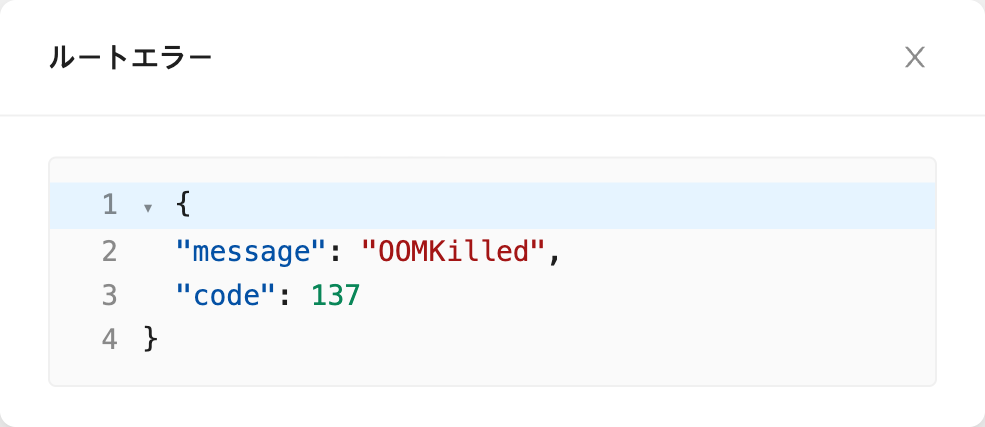
自動スケーリングルール#
自動スケーリングルール（Auto Scaling Rules）は、ライブメトリックに基づいてモデルサービスのレプリカ数を自動的に増減します。これにより、使用率が低いときはリソースを節約し、使用率が高いときはリクエストの遅延や失敗を防ぎます。
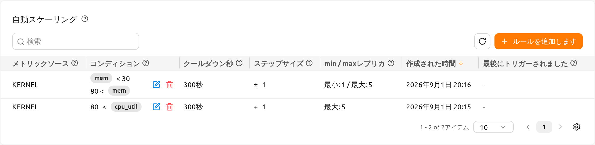
ルール一覧には以下が含まれます：
- 作成された時間（Created At）および最後にトリガーされました（Last Triggered）の日時範囲でルールをフィルタリングできるプロパティフィルターバー。
- サーバーサイドのページネーション。
- メトリックソース（Metric Source）、コンディション（Condition）、クールダウン秒（Cooldown Sec.）、ステップサイズ（Step Size）、min / max レプリカ（Min / Max Replicas）、作成された時間（Created At）、最後にトリガーされました（Last Triggered）の列。ステップサイズ列は、設定されたしきい値から導出される方向に基づいて
+、−、±を自動的に表示します。 - 各行のコンディションサマリーの横に表示される行ごとの編集および削除アイコン。
ルールを追加します ボタンをクリックすると、自動スケーリングルールを追加します エディターが開きます。
既存のルールを変更するには、その行の編集アイコンをクリックします。ルールの値が事前に入力された状態で 自動スケーリングルールを編集します エディターが開きます。エディターには次のフィールドが順番に含まれます：
メトリックソース（Metric Source）:
KernelまたはPrometheusを選択します。メトリック名（Metric Name）:
Kernelの場合、メトリック名を入力します。cpu_util、mem、net_rx、net_txなどの一般的なメトリックがオートコンプリートの候補として提案され、カスタム名を自由に入力することもできます。メトリック名プリセット（Metric Name (Prometheus Preset)）: メトリックソースが
Prometheusの場合のみ表示されます。ドロップダウンからプリセットを選択すると、プリセットのメトリック名、クエリテンプレート、および（定義されている場合）クールダウン秒（Cooldown Sec.）が自動的に入力されます。コンディション（Condition）: スケーリング方向を選択するセグメントコントロールです。3 つのオプションがあります。
- スケールイン: メトリックがしきい値を下回るとレプリカを減らします。
Metric < [しきい値]の条件を設定します。 - スケールアウト: メトリックがしきい値を上回るとレプリカを増やします。
Metric > [しきい値]の条件を設定します。 - スケールイン＆アウト: メトリックが設定した範囲のどちら側を超えたかに応じて、自動的に縮小または拡張します。
Metric < Min ThresholdまたはMetric > Max Thresholdの条件を設定します。
- スケールイン: メトリックがしきい値を下回るとレプリカを減らします。
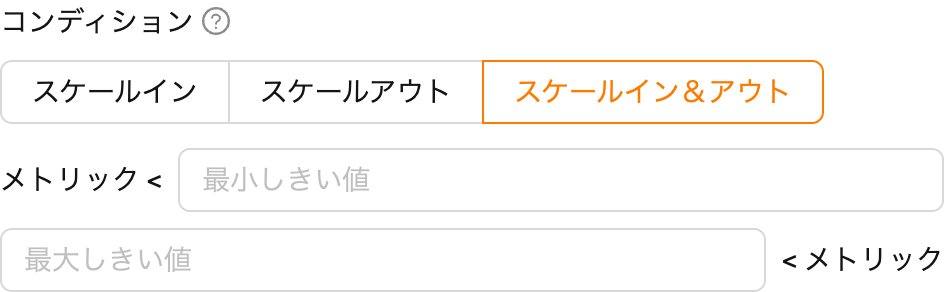
ステップサイズ（Step Size）: スケーリングイベントごとに追加または削除するレプリカ数を指定する正の整数です。選択したコンディション（スケールイン / スケールアウト / スケールイン＆アウト）に応じて
-、+、±の符号が自動的に表示されます。- 最小しきい値のみ設定:
[metric] < [minThreshold]条件になるとスケールイン（Scale In）されます（メトリックがしきい値を下回るとレプリカが減少します）。 - 最大しきい値のみ設定:
[metric] > [maxThreshold]条件になるとスケールアウト（Scale Out）されます（メトリックがしきい値を上回るとレプリカが増加します）。 - 両方設定:
[metric] < [minThreshold]の場合はスケール イン、[metric] > [maxThreshold]の場合はスケール アウト されます。
- 最小しきい値のみ設定:
クールダウン秒（Cooldown Sec.）: スケーリングイベント後、次の評価まで待機する時間（秒単位）です。
最小レプリカ（Min Replicas）および最大レプリカ（Max Replicas）: 自動スケーリングがレプリカ数に対して強制する下限と上限です。自動スケーリングは、レプリカ数を最小レプリカより下げたり、最大レプリカより上げたりすることはありません。
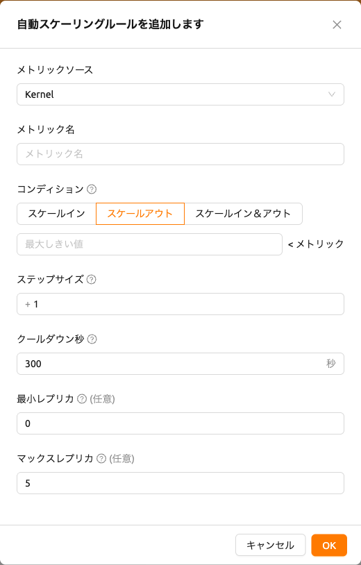
トークンの生成#
デプロイのステータスが HEALTHY になったら、デプロイ一覧で対応するデプロイ名をクリックしてデプロイ詳細ページを開きます。サービス情報カードで サービスエンドポイント URL を確認できます。公開 が有効の場合、エンドユーザーはトークンなしでデプロイにアクセスできます。無効の場合は、以下の説明に従ってトークンを作成してください。
アクセストークンは、デプロイ詳細ページ下部の アクセストークン カードで管理します。カードタイトル横の ⓘ アイコンにカーソルを合わせると、「このデプロイメントのエンドポイントへの API リクエストを認証するためのアクセストークンを管理します。」 という説明が表示されます。
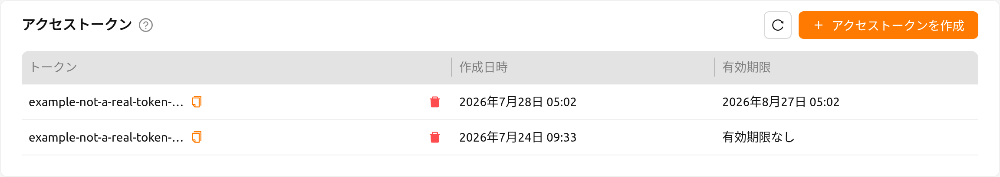
アクセストークンの作成#
- カードヘッダーの
アクセストークンを作成ボタンをクリックします。ページ上部の 非公開デプロイメント バナーにある アクセストークンを追加 ボタンからも同じダイアログを開けます。 - トークンの 有効期限 を選択します。
7日、30日、90日: 現時点からその日数後に失効します。既定値は7日です。- カスタム有効期限: 日時ピッカーが表示され、失効時点を直接指定できます。指定する時点は現在より未来である必要があります。
- 有効期限なし: 有効期限を遠い未来の日付（
2099年12月31日）に設定し、実質的に失効しないトークンを作成します。以降、トークンダイアログ、アクセストークン一覧、チャットのトークン選択欄には「有効期限なし」という文言ではなく、この日付が表示されます。
アクセストークンを作成をクリックして発行します。
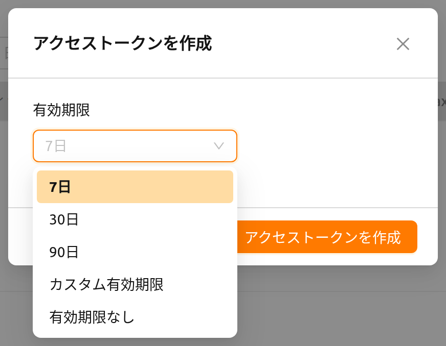
マネージャーがまだネットワークエンドポイントを発行していない間、
アクセストークンを作成ボタンは無効になり、ツールチップに 「ネットワークエンドポイントはまだ発行されていません。」 と表示されます。自分が所有していないデプロイメントでは 「アクセストークンを管理できるのはデプロイのオーナーのみです。」、停止中またはすでに稼働していないデプロイメントでは 「デプロイは停止中か、すでに稼働していません。」 と表示され、ボタンは無効になります。この 2 つの条件では、トークンの削除も無効になります。
トークンが発行されると トークン ダイアログが開き、トークンの値とコピーボタン、選択した有効期限が一度だけ表示されます。このダイアログから、または後で一覧からトークンをコピーできます。
アクセストークン一覧#
カードには、このデプロイメントに発行されたすべてのアクセストークンが新しい順に表示されます。
- トークン: トークンの値です。省略表示され、コピーボタンが付いています。同じセルの削除アイコンからトークンを削除できます。
- 作成日時: トークンが発行された日時です。
- 有効期限: トークンが失効する日時です。有効期限なし で作成したトークンは
2099年12月31日と表示されます。
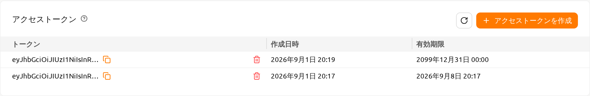
トークンは Authorization リクエストヘッダーで送信します。
| Key | Value |
|---|---|
| Content-Type | application/json |
| Authorization | BackendAI <token> |
アクセストークンの削除#
トークン行の削除アイコンをクリックします。アクセストークンを削除 ダイアログで確認のために 削除 と入力する必要があり、入力した値が一致するまで OK ボタンは無効のままです。
アクセストークンの削除は 元に戻せず、即座に反映されます。そのトークンを使い続けているクライアントは認証に失敗するようになります。
デプロイの終了#
デプロイが不要になった場合は、終了することを推奨します。デプロイを終了するには、サービス情報カードの その他 メニューを開き、デプロイを削除 を選択します。入力確認モーダルが表示されるため、デプロイ名を入力すると 完全に削除 ボタンが有効になります。終了したデプロイは 破壊された フィルタービューに表示されます。
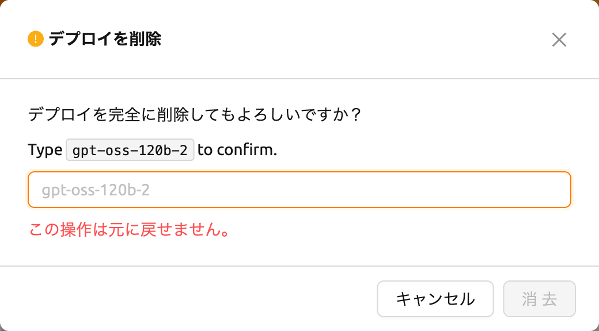
デプロイへのアクセス#
デプロイへのアクセスを可能にするため、デプロイ URL をエンドユーザーと共有します。公開 が有効の場合、デプロイ詳細ページの サービスエンドポイント URL をそのまま共有できます。非公開デプロイの場合は、URL とアクセストークンを併せて共有します。
APIリクエストの送信#
以下は、デプロイへのリクエスト送信が正しく機能しているかどうかを確認する curl コマンドの簡単な例です：
export API_TOKEN="<token>"
export MODEL_SERVICE_ENDPOINT="<model-service-endpoint>"
curl -H "Content-Type: application/json" -X GET -H "Authorization: BackendAI $API_TOKEN" "$MODEL_SERVICE_ENDPOINT"デフォルトでは、エンドユーザーはエンドポイントにアクセスできるネットワーク上にいる必要があります。 サービスがクローズドネットワークで作成された場合、そのクローズドネットワーク内にアクセスできる エンドユーザーのみがサービスにアクセスできます。
LLMチャットテスト#
大規模言語モデル（LLM）サービスを作成した場合、リアルタイムでLLMをテストできます。
デプロイの準備が完了すると、デプロイ詳細ページ上部の デプロイの準備が完了しました バナーに チャットでテスト ボタンが表示されます。このボタンをクリックしてテストを開始します。
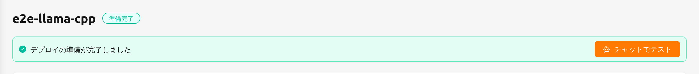
作成したモデルが自動的に選択されたChatページにリダイレクトされます。 Chatページで提供されるチャットインターフェースを使用して、LLMモデルをテストできます。 チャット機能の詳細については、Chatページを参照してください。
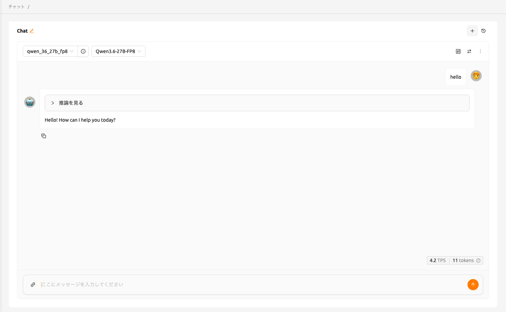
Chat ページでのトークン選択#
Chat ページが Backend.AI のデプロイメントに接続している場合、トークン欄は単なるテキスト入力ではなく、そのデプロイメントのアクセストークン一覧を表示するセレクタになります。
- 各選択肢にはトークンの 末尾 6 文字 がコードチップとして表示され、その横に有効期限（例:
~ 2026年8月26日、有効期限なし で作成したトークンは~ 2099年12月31日）が表示されます。すべてのトークンは同じ JWT ヘッダーで始まるため、実際に区別できるのは末尾の部分です。選択肢にカーソルを合わせると、発行日時 → 有効期限の全体を確認できます。 - 期限切れのトークンは表示されません。 有効なトークンのみが一覧に表示されます。
- 欄が空の場合は、最後に作成された有効なトークン が自動的に選択されます。利用者が意図的に選択を解除した場合は、再び自動選択されることはありません。
- 欄の横の歯車アイコン（アクセストークンの設定）をクリックすると、そのデプロイメントのアクセストークン領域が開き、作業を中断せずに新しいトークンを発行できます。戻ると一覧が再読み込みされるため、作成したばかりのトークンをすぐに選択できます。
デプロイメントに有効なトークンが 1 つもない場合、セレクタは空になります。トークンの生成 を参照して先にトークンを作成してください。
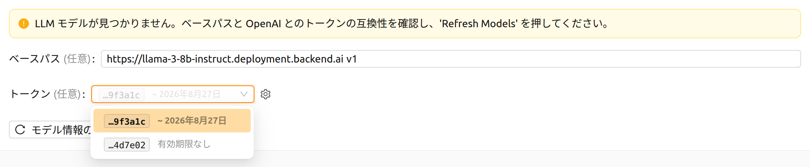
API接続に問題が発生した場合、Chatページにモデル設定を手動で構成できるオプションが表示されます。 モデルを使用するには、以下の情報が必要です：
- ベースパス（オプション）: モデルが配置されているサーバーのベースURLです。 バージョン情報を含めてください。 例えば、OpenAI APIを使用する場合は、https://api.openai.com/v1 を入力してください。
- トークン（オプション）: モデルサービスにアクセスするための認証キーです。トークンは Backend.AIだけでなく、さまざまなサービスから生成できます。形式と生成プロセスは サービスによって異なる場合があります。詳細については、常に特定のサービスのガイドを参照してください。 例えば、Backend.AIで生成されたサービスを使用する場合は、 トークンの生成方法についてはトークンの生成セクションを参照してください。
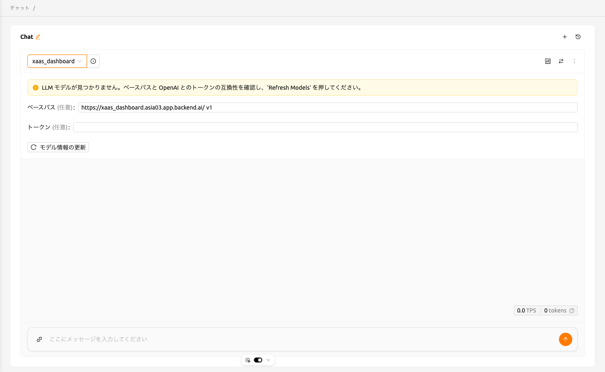
モデルストア#
モデルストア（Model Store）は、事前構成されたモデルを閲覧、検索、デプロイできるカードベースのギャラリーを提供します。サイドバーメニューからモデルストアにアクセスできます。
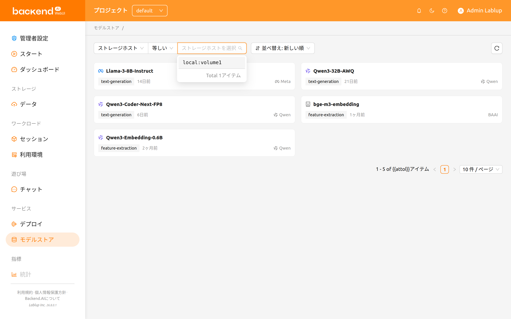
モデルの閲覧と検索#
ページ上部にはフィルターと並べ替えのレイアウトが使用されています：
プロパティフィルターバー: 条件を 1 つ以上追加してカード一覧を絞り込みます。使用できるプロパティは 2 つです。
- モデル名: 名前でモデルカードを検索します。
- ストレージホスト: モデルフォルダーが置かれているストレージホストでカードを絞り込みます。ホスト名を入力する代わりに、サーバに登録されたストレージホストのドロップダウンから選択します。選択した時点でフィルター条件として確定します。そのホストだけを表示するには
equals、そのホストを除外するにはnot equals演算子を使用します。
並べ替え（Sort）: 結果の並び順を選択します。使用可能なオプションは、
名前 (A→Z)、名前 (Z→A)、古い順、新しい順です。更新（Refresh）: 更新ボタンをクリックしてカード一覧を再読み込みします。
ホスト名を入力せずに一覧から選択するため、ホスト名の打ち間違いによって結果が空になることがありません。条件は
ANDで結合されるので、名前の条件とストレージホストの条件を組み合わせられます。
モデル一覧は現在のドメインの MODEL_STORE プロジェクトに自動的にスコープされます。個別のドメインフィルターはありません。このページに表示されるすべてのカードは、すでにあなたのドメインに属しています。
各カードには、モデルブランドのアイコン、タイトル（タイトルが設定されていない場合は名前）、タスクタグ、相対作成時刻、およびアイコン付きの著者（Author）が表示されます。現在のプロジェクトに互換性のあるプリセットがないカードは不透明度 50 % で表示されます。そのようなカードを開いて詳細を表示することは可能ですが、デプロイ（Deploy） ボタンは無効化され、ドロワーに 互換性のあるプリセットがありません。このモデルはデプロイできません。 というエラーアラートが表示されます。
サーバーで MODEL_STORE プロジェクトが設定されていない場合、ページには管理者に問い合わせるようにとの案内とともに モデルストアプロジェクトが見つかりません というメッセージが表示されます。フィルターに一致するモデルカードがない場合は モデルが見つかりません と表示されます。
一覧はページ下部でページネーションされます。ページサイズは 10、20、50 件の中から変更できます。
モデルカードの詳細#
カードをクリックすると、ページの右側にモデルカードのドロワーが開きます。ドロワーの上部にはモデルのタイトルと説明が表示され、次にタスク、カテゴリ、ラベル、ライセンスのタグが続き、その後に次の項目を含む詳細一覧が表示されます：
- 著者（Author）
- アーキテクチャ（Architecture）
- フレームワーク（Framework）（各フレームワークはアイコン付きで表示）
- バージョン（Version）
- 作成日時（Created） および 最終更新日時（Last Modified） のタイムスタンプ
- モデルフォルダ（Model Folder）: モデルストレージフォルダのフォルダエクスプローラを開くクリック可能なリンク
- 最小リソース（Min Resource）: 最小リソース要件（CPU、メモリ、GPU）
モデルカードに README が含まれている場合は、ドロワーの下部に README.md カードとしてレンダリングされます。

モデルのデプロイ#
ドロワーヘッダーの デプロイ（Deploy） ボタンをクリックすると、モデルがサービスとしてデプロイされます。デプロイフローは次の 2 通りのいずれかで動作します：
自動デプロイ: モデルに使用可能なプリセットがちょうど 1 つあり、現在のプロジェクトにアクセス可能なリソースグループがちょうど 1 つある場合、モーダルを表示せずにデプロイが静かに作成されます。エンドポイントがクエリ可能になった後、そのデプロイ詳細ページに遷移します。
モデルのデプロイモーダル（Deploy Model）: それ以外の場合、モデルのデプロイモーダルが次の必須フィールドとともに開きます。
- プリセット（Preset）: 使用可能なリソースプリセットのグループ化されたドロップダウンです。プリセットが複数のランタイムバリアントにまたがる場合、オプションはランタイムバリアント名ごとにグループ化されます。それ以外の場合は、フラットなリストとして表示されます。
- リソースグループ（Resource Group）: サービスが実行されるリソースグループです。
モーダルの
デプロイ（Deploy）ボタンをクリックしてデプロイを開始します。モデルがデプロイされたことを確認する成功トーストが表示され、デプロイ詳細ページに遷移します。

選択したモデルに現在のプロジェクトと互換性のあるプリセットがない場合、ドロワーの
デプロイ（Deploy） ボタンは無効化され、互換性のあるプリセットが利用可能になるまで
デプロイはブロックされます。